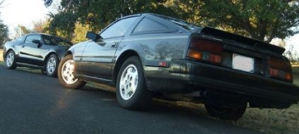

-
To get mine to plug in, I pulled out the coil spring and put the jack under the control arm so I could make the axle pretty level with the diff.
I then got a hammer and a long metal bar. I put the bar on the "shoulder" of the axle (near the inner cv boot). Then got the hammer and smacked the bar. It popped in on the first hit, but I hit in a few spots around the shoulder just for good measure.
The long bar was so I could swing the hammer from not under the car. -
That's the general idea…smack the biatch.Cha iro
enjoy building it yourself.
if it fails, fuck it.
at least you gave it a whirl. -
well dropping the entire subframe takes exactly 60 minutes for me… it's not that bad. (the last time I did it, I was on a timer!)
but it doesn't seem like it has to be done in this case. do you have a spare axle with a stub end you can take off and use as a test fit piece?
the reason I said hit the axle when the car is on the floor is because I couldn't get it to go in when the suspension was unloaded either… it was going in at too much of an angle. -
Yea, I still have the old stub I can test fit with. Thanks for all the suggestions guys. I'll update you later today after I go beat on it some.Careless;323738 wrote: well dropping the entire subframe takes exactly 60 minutes for me… it's not that bad. (the last time I did it, I was on a timer!)
but it doesn't seem like it has to be done in this case. do you have a spare axle with a stub end you can take off and use as a test fit piece?
the reason I said hit the axle when the car is on the floor is because I couldn't get it to go in when the suspension was unloaded either… it was going in at too much of an angle.
1985 300ZX Turbo GLL ^Click for log^
Originally posted by nater86zx -
10 points for Careless. Measure the axle again and it is, in fact, the same length as the driver's side. So it got boxed wrong at the factory somehow. I'll be heading back to the parts house and reordering it again (sigh).amreboot;323664 wrote: I have never seen the C clip come out with the axles.
The passenger side axle is longer than the driver side.
Chances are you got the wrong axle.
On another note, the old stub clicked right into the diff, so the clip is working and everything. Again, I'll update again once I get another axle shipped here in a few days.
1985 300ZX Turbo GLL ^Click for log^
Originally posted by nater86zx

Copyright © 2006–. All rights reserved. Privacy Policy